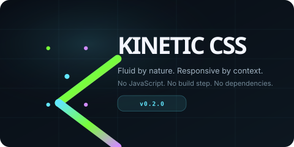

Continuous scale
Typography and spacing move smoothly between viewport sizes. No pile of arbitrary breakpoints.
A responsive framework that adapts to the space a component actually has — not just the size of the screen. No JavaScript, no compiler, no build step. Modern CSS: cascade layers, custom properties, clamp(), container queries, light-dark(), and OKLCH colors.

Typography and spacing move smoothly between viewport sizes. No pile of arbitrary breakpoints.
Cards and navigation can react to their own available width using CSS container queries.
Switch between compact, comfortable, and spacious without rewriting component styles.
Resize this card's container: at 34rem it becomes a two-column composition. The page breakpoint is irrelevant.
v0.2.0 adds application patterns: dialogs, tabs, accordions, menus, tooltips. Typography and spacing adapt fluidly.
Heads up
v0.2.0 ships application patterns alongside the fluid defaults. Override tokens to re-skin.
| Status | Version | Changed |
|---|---|---|
| live | 0.2.0 | 2026-10-30 |
| live | 0.1.0 | 2026-10-30 |
Responsive by container query.
Kinetic CSS core plus independently installable JavaScript and TypeScript add-on packs.
Responsive layouts, design tokens, components, density modes, themes. Zero dependencies.
npm install kinetic-css
Dialogs, tabs, dropdowns, toasts, theme switching, form validation, scroll utilities.
npm install kinetic-js
Typed APIs, type-safe event handling, typed theme configuration, ESM modules, tree-shaking.
npm install kinetic-ts
<link rel="stylesheet" href="https://cdn.jsdelivr.net/npm/kinetic-css/css/kinetic.css">
<link rel="stylesheet" href="https://cdn.jsdelivr.net/npm/kinetic-css/css/kinetic-theme.css">npm install kinetic-css
# optional
npm install kinetic-js kinetic-ts
# or use the starter template:
cp -r starter/ /your/project/